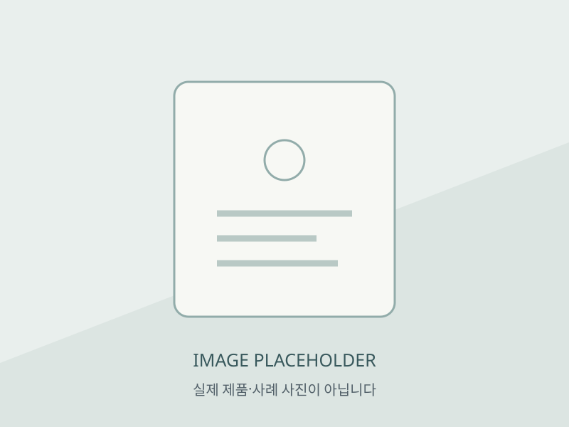

임시 이미지 1
상패 · 감사패 · 기념품 자료 자리 1
사진의 실제 내용과 모델 대응은 미확인입니다.
상패/감사패/기념패/인증서 ···
AS-IS · 기존 문구증명서 및 기념품
메뉴명과 본문 제목의 범위가 다릅니다. 포함 품목과 사례명을 판독 후 소개문을 채웁니다.
실제 이미지가 아닌 임시 자리입니다. 원본의 내용·모델 대응·사용 허가 확인 후 교체해야 합니다.

사진의 실제 내용과 모델 대응은 미확인입니다.
사진의 실제 내용과 모델 대응은 미확인입니다.
사진의 실제 내용과 모델 대응은 미확인입니다.
본문 이미지 참조 11개 중 3개 자리를 시연합니다. 전체 출처는 하단에 기록했습니다. 참조 수는 제품·사례 수와 다릅니다.
기존 문의 준비 문구를 항목별로 재배치한 시안입니다.
사례별 연도·소재·제작 범위는 이미지 판독과 담당자 승인 후 추가합니다.
화면의 섹션·제목은 TO-BE 제안입니다. 아래는 2026-10-26 HTML 소스 조사에서 확보한 원문과 출처이며 현재 운영 정보의 정확성은 별도 확인이 필요합니다.
대응 URL: http://www.gomemo.net/room/certification/
텍스트 노드 순서이며 원본 화면의 줄바꿈과 다를 수 있습니다. 기술 주장·조건·날짜는 원문을 인용한 것이며 새 보증이 아닙니다.
실제 사진은 다운로드·수정·표시하지 않았습니다. 원문 링크를 직접 열 때만 외부 요청이 발생합니다.
페이지 이름·사례 분류·확대 방식·문의 준비 항목. 원문 유지 범위·추가 설명·이미지 배정과 다음 행동의 우선순위를 컨펌해야 한다. 담당자와 승인자는 미지정이다.
AP01~AP11 검토 목록